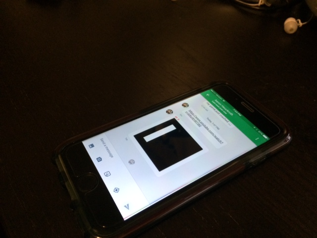
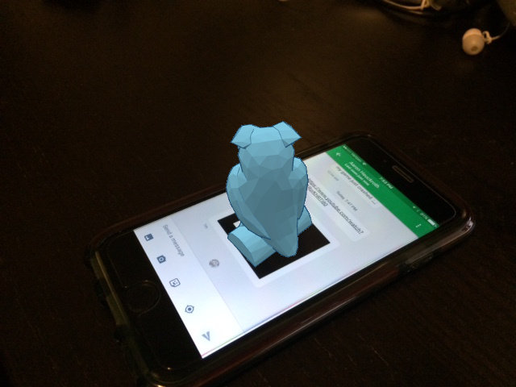
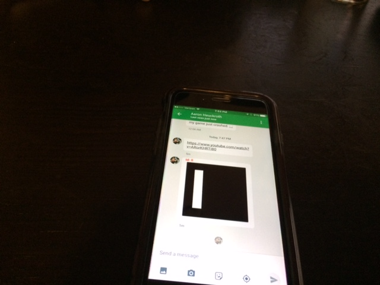
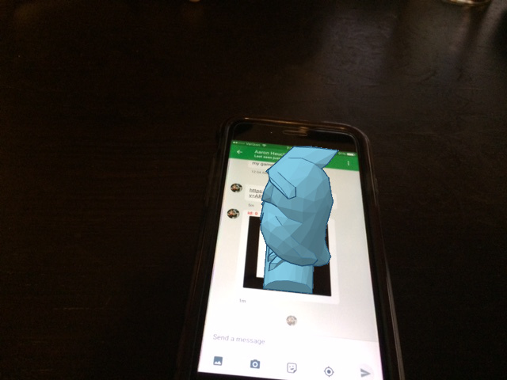
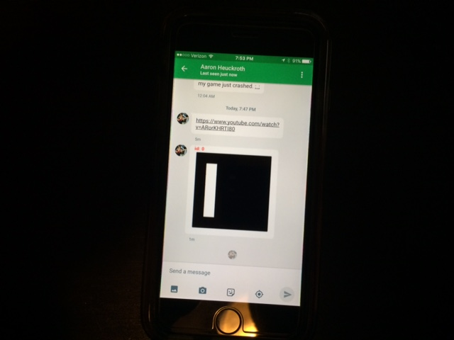
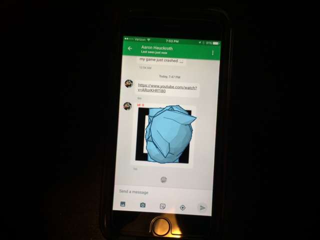
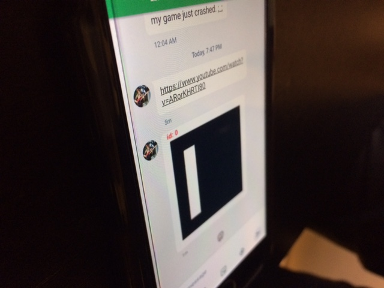
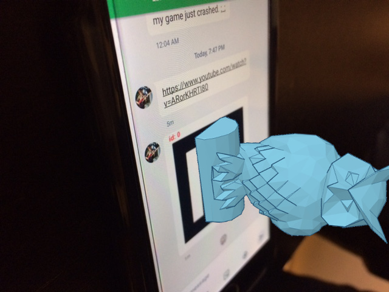
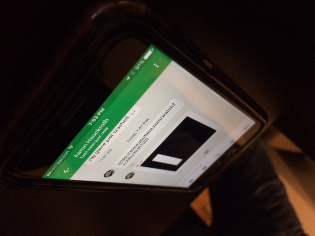
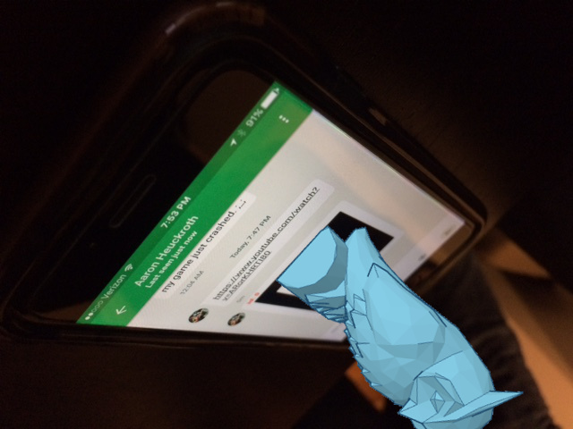

Problem Definition
Augmented reality applications alter a user's perceptions of the physical world around them using computer-generated sensory information. This information can be used to give the user the impression of virtual objects interacting with physical space. Emerging technologies like Google Glass and the Microsoft Hololens have exciting applications in entertainment, design, and education, and are raising public awareness of the possibilities of augmented reality.
One popular concept is the idea of overlaying synthetic visuals over the user's vision, which are intended to appear as if they exist in the three-dimensional space around them. To do this correctly, an augmented reality application must...
- Gather information about the world around the user.
- Determine the correct position, and orientation of the virtual object to be displayed.
- Generate the desired visuals.
- Overlay the generated visuals onto the user's vision.
Though we can't yet render directly into a user's vision, we can approximate this process by drawing the virtual object onto an image or video sequence before displaying it to the user.
The process of processing a 2D object and computing its spatial properties in 3D is called Pose Estimation. By analyzing the appearance of a known object in 2D, we can compute its 3D position and orientation, and use this information to determine how and where a virtual object should be rendered.
Our project aims to create a system which will use pose estimation to render a 3D object onto a flat surface in a 2D image such that it appears to exist in physical space.
Methodology and Background Research
We plan to implement this system using Javascript, since this will allow us to run the solution in any modern web browser with no need to compile or install additional software or libraries.
To do this, we will use the following tools:
- jsfeat: Javascript computer vision library that provides data structures for matrices, as well as functions for object detection and tracking.
- js-aruco: Javascript augmented reality library, which provides support for detecting and processing standardized AR markers.
- three.js: Javascript WebGL 3D rendering library, which will allow us to render 3D objects directly onto images in the browser
- HTML5: Modern browser functionality will allow us to access media to run our algorithms on -- embedded video, user-uploaded images, webcam capture, etc.
Other people have definitely set out to solve this problem before, but weren't able to find a satisfying, functional example of Javascript-based pose estimation and 3D rendering that correctly positions, orients, and scales the virtual object. The goal is something that looks like a "hologram", floating above the surface of the 2D marker.
Furthermore, while this process is often performed on image sequences, other implementations frequently exhibit "stuttering" behavior, where more than one pose is possible for a given marker, and the program must choose which one to render. They also tend to jitter slightly when standing still due to small differences from one frame to the next. We can fix these problems by employing tracking and filtering techniques we learned from previous homework assignments.
This slide deck references many papers on pose estimation, and gives an overview of different approaches and techniques.
If successful, this project could be extended specifically for use with visualizing objects in preparation for 3D printing. By outfitting an FDM 3D Printer with one or more webcams and a set of AR markers, one could theoretically preview the positioning and size of objects from the 3D models used to print them. More ambitiously, one could use the 2D projection of the 3D model to detect printing errors by comparing it against the shape of the object during printing, which could be obtained through segmentation using brightly-colored plastic filament.
We've already got live 3D rendering working, and we have partially functional examples and pseudocode of pose estimation and general image processing to work from. The next step is to combine them!
Our recent course lectures on rotation in 2D and 3D, and quaternions will be especially helpful. Our previous discussions of segmentation and filtering may also be valuable in detecting the AR marker in a video sequence and ensuring that tracking is smooth.
Other computer vision papers covering pose estimation, such as this one, will also be useful in figuring out how to compose our solution.
Input Images and Expected Results
Below are some sample images which show a cell phone rendering a standardized augmented reality marker, which was generated by this GitHub project. The images were taken at a variety of angles and distances from the marker, to test the performance of our solution under different conditions.
The composite images were created by taking a 3D model of a virtual object, rendering it in Tinkercad, and aligning it with a 3D model of the 2D marker.
The orientation and position of the virtual camera was then adjusted until the marker appeared as it does in each input image, and a screenshot of the rendered 3D object was saved. These 2D renderings were then manually composited with the input images so as to make it look like the virtual object is "standing" on the surface of the cell phone.
Our final implementation should be fast enough to perform this function in real time on image sequences, such as videos or a webcam feed.
| |
|
|  |  |
|  |  |
|  |  |
|  |  |
|  |  |
Discussion
Credits and Bibliography
Collaboration between Aaron Heuckroth and Elena Quijano.